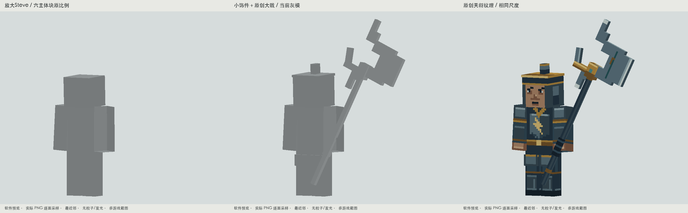
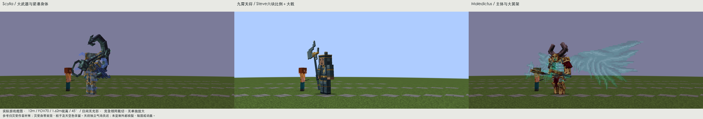
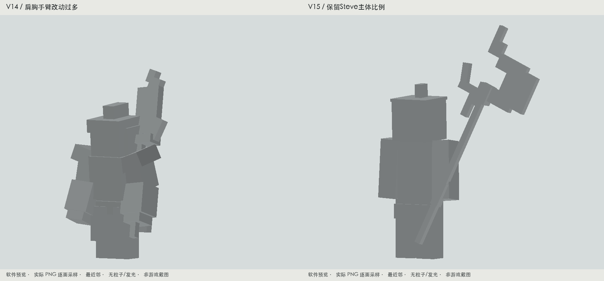

九霄天将：保留Steve六块主体，少量饰件，明显的大戟
本轮只修改九霄天将。六块尺寸关系完整保留：头8×8×8、身体8×12×4、手臂与腿4×12×4，统一放大1.35倍。裸主体高2.7格，含小冠饰约3格；双腿仅略分开。额外身体几何共4块：两片浅腿甲、小冠沿、小冠脊。护甲、袖口、腰带、靴面主要画在原来的六块表面。

同尺度离线对照：裸Steve主体 → 加4块小饰件和原创大戟 → 实际PNG贴图。软件预览。
实际游戏画面
Forge独立静音隐藏窗口测试，原版日光、石砖和玩家参照。14项原生检查通过；每一项核对实际加载的模型、贴图和动画SHA-256。没有进入或关闭用户的愚者存档。此处是受控美术测试，不冒充自然战斗平衡验收。
与你给出的两只参考对照

共同12m机位、FOV70、1.62m视高、45°和相同裁切。灾变的原生效果与天空色保留；本页不把其反射或粒子当作贴图效果。灾变作者发布页
从Scylla画面学习“紧凑主体与明显的大武器”；从Maledictus画面学习“身体与特色外围结构分主次”。落实在天将上的是完整Steve主体和单一的大戟轮廓。图中的参考用于比例与视觉关系研究，未声称它们源码骨架等同Steve，也未复制触手、翼架或资产。
自检与修正
上一稿改变了肩胸、手臂和腿脚太多。本稿去掉那些结构，身体回到六个经典Cuboid。自检中修正了像张嘴的面部色块、像数字的胸纹、戟面共面闪烁、死亡穿地以及攻击接触帧“举戟不挥戟”的反向旋转。同机位对照后，又将贴着头部的兵器稍向外展，刀头做成有真实开口的阶梯月牙形；这次增量只在兵器，不扩张身体。修改后重新导出并实机复验。没有增加新实体、装备、伤害、范围或碰撞调整。

V14与V15：相同机位和世界尺度的灰模对照。
完整动作
六条名称与时长沿用现有运行绑定。攻击接触仍在3 tick，整条6 tick；实机捕获了蓄势、接触和恢复。施法完整离线回放，生产技能路由保留。
实际攻击：蓄势 · 接触 · 恢复 · 死亡。死亡红色是游戏自带受伤覆盖层。
纹理、UV与六块主体检查
原始128×128 PNG · 实际geo.json · 实际animation.json · 可编辑bbmodel（内嵌原创图集与6条动作） · 运行资源三件套 · 离线检查 · 实机加载核对
权威生成源：tools/art/tianjiang-steve-v15/create.py。再次导出三件资源逐字节相同；导出前检查所有权哈希，遇到人工或并行修改会停止。旧V10/V11/V12导出也会因资源哈希改变而拒绝覆盖。